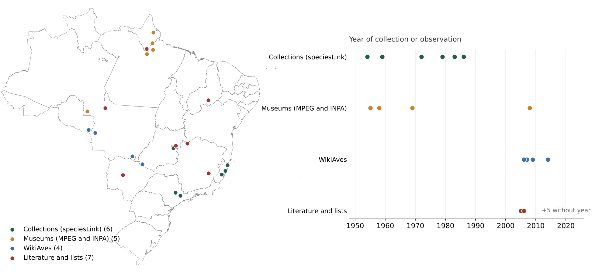
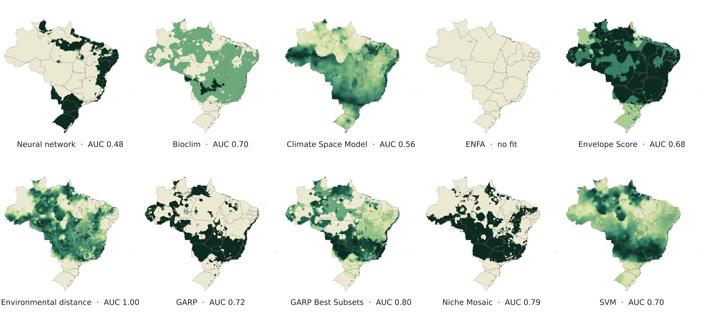

Great-billed seed finch: eleven algorithms to model a threatened bird from 22 records
Records from collections, museums, citizen science and the literature, a PCA of climate and a comparison between MaxEnt and ten openModeller algorithms for Sporophila maximiliani.
- Deliverable
- On-demand modelling, 2018
- Species
- Sporophila maximiliani, the bicudo
- My role
- Record compilation, modelling and maps
- Tools
- MaxEnt · openModeller · ArcMap

 Suitability (MaxEnt)
Suitability (MaxEnt) 10th percentile presence threshold
10th percentile presence threshold
22 records after cleaning, from 1954 to 2014, coloured by source: speciesLink collections, museums, WikiAves and the literature. On the right, the year each record was collected or observed.
MaxEnt with the 22 records and three PCA axes of climate. On the right, the same model with the 10th percentile training presence threshold: about 70% of the country is above it, leaving out the semi-arid north-east and the far south.
The ten openModeller algorithms with all records, each normalized from 0 to 1. Predictions differ widely, and ENFA did not produce a fit. The AUC shown is the training AUC.
The problem
The great-billed seed finch is one of the birds most targeted by the songbird trade in Brazil, listed as Endangered by the IUCN and as Critically Endangered in the country. Reliable records are few and scattered in time. The brief was to estimate where the climate is suitable for the species with the available data.
The data
22 records after cleaning, from 1954 to 2014: speciesLink collections (MBML and UNICAMP), the Museu Paraense Emílio Goeldi and INPA, WikiAves, Taxeus, papers, a management plan and the Brazilian Red Book. As predictors, three axes of a PCA of the 19 bioclimatic variables clipped to Brazil.
The method
- Cleaning and georeferencing of the records, with source, institution and year.
- PCA of the 19 bioclimatic variables for Brazil, with the first three axes as predictors.
- Three datasets: all records and subsets of 70% and 90%, with the rest held out for testing.
- MaxEnt and ten openModeller algorithms: neural network, Bioclim, Climate Space Model, ENFA, Envelope Score, environmental distance, two GARP variants, Niche Mosaic and SVM.
- Presence–absence map from MaxEnt with the 10th percentile training presence threshold, in ArcMap.
The result
With 22 records, the algorithms diverge widely. MaxEnt points to suitable climate across much of central Brazil, the Amazon and the east coast.
- The oldest records come from collections and museums; the most recent from citizen science and the literature.
- GARP with Best Subsets and Niche Mosaic had the highest training AUC, leaving aside environmental distance, which tends to reproduce the training points.
- Suitable climate does not mean presence: illegal trapping has wiped the species out of much of the area where it used to occur.